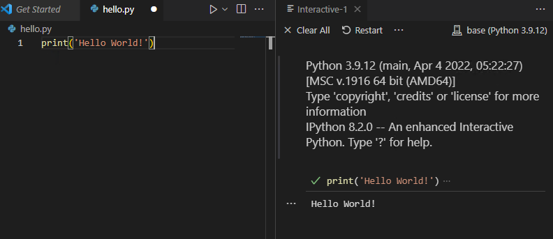
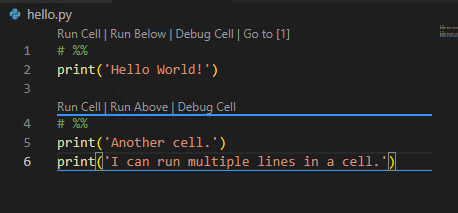
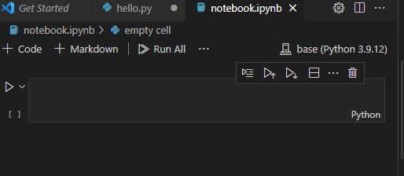
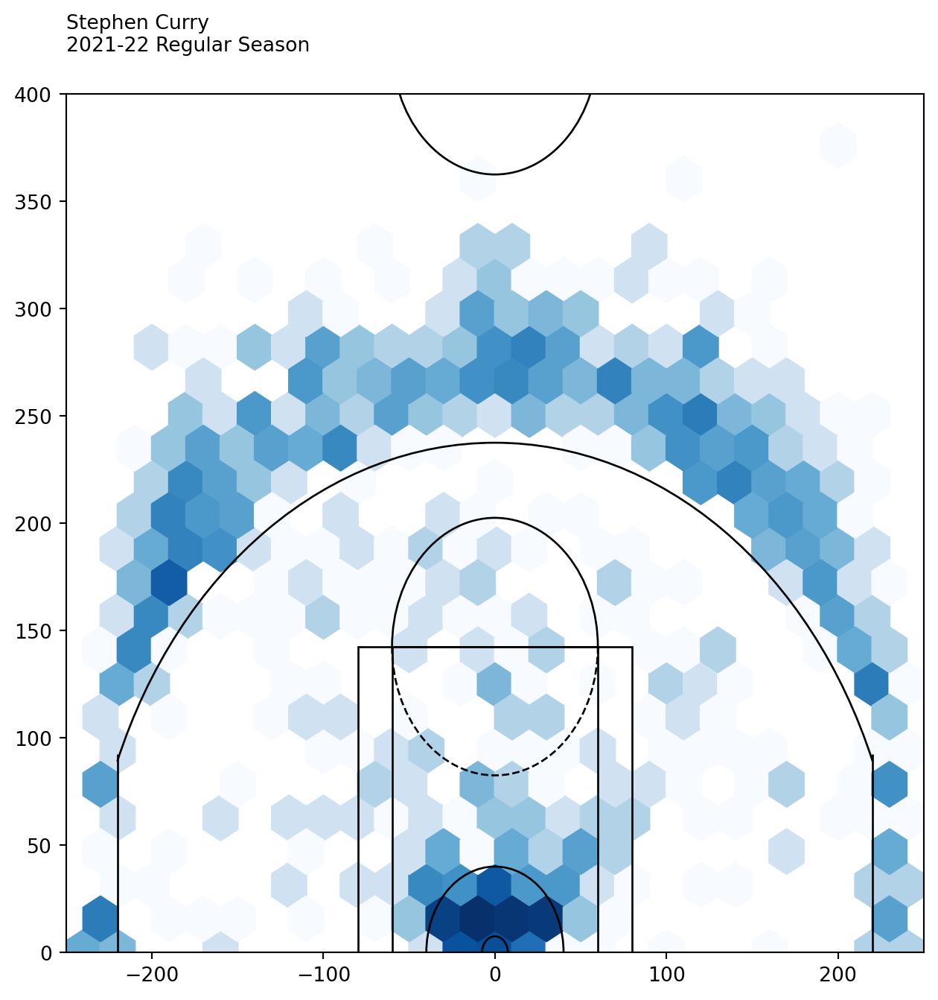

print('Hello World!')1 Preliminaries
1.1 Why Python?
1.1.1 Python is easy to learn and use
1.1.2 Python is easy to read
1.1.3 Python Community is mature and supportive
1.2 Hello world!
1.2.1 Setup the Python environment
In this section we are going to setup the Python developing environment.
1.2.1.1 VS Code + Anaconda
Click Appendix A.1 to see the detailed steps for VS Code and conda. You may also check out the official document. It contains more features but less details.
We will talk about the relation between Python and Anaconda and more about packages sometime later.
1.2.1.2 Google Colab
Click Appendix A.2 for more details.
1.2.2 Hello World!
Take VS Code as an example. In the editor window, type in the code, and run the file in the interactive window.

If you see a small green check mark in the interactive window and also the output Hello World!, you are good to go!
1.2.3 Python code cells and Notebooks
In VS Code you can run codes cell by cell. Each cell is separated by the symbol # %%. Each cell may contain multiple lines. You may click the small button on top of the cell or use keybindings.

This feature actually mimic the notebook. We may start a real Python Notebook file by directly creating a file with extension .ipynb.

The layout is straightforward.
1.2.4 Linters
A linter is a tool to help you improve your code by analyzing your source code looking for problems. Some popular choices for Python includes Flake8 and Pylint. It is highly recommended to use one that is compatible with your IDE which can help you to increase the quality of your codes from the begining.
To install Flake8 please go to its homepage. It works well with VS Code.
1.3 Exercises
Exercise 1.1 (Hello world!) Please set up a Python developing environment, for both .py file and .ipynb notebook file, that will be used across the semester. Then print Hello World!.
Exercise 1.2 (Define a function and play with time) Please play with the following codes in a Jupyter notebook. We haven’t talked about any of them right now. Try to guess what they do and write your guess in markdown cells.
import time
def multistr(x, n=2):
return x * n
t0 = time.time()
x = 'Python'
print(multistr(x, n=10))
t1 = time.time()
print("Time used: ", t1-t0)Exercise 1.3 (Fancy Basketball plot) Here is an example of the data analysis. We pull data from a dataset, filter the data according to our needs and plot it to visualize the data. This is just a show case. You are encouraged to play the code, make tweaks and see what would happen. You don’t have to turn in anything.
The data we choose is Stephen Curry’s shots data in 2021-2022 regular season. First we need to load the data. The data is obtained from nba.com using nba_api. To install this package please go to its PyPI page.
from nba_api.stats.static import players
from nba_api.stats.endpoints import shotchartdetail
player_dict = players.get_players()The shots data we need is in shotchartdetail. However to use it we need to know the id of Stephen Curry using the dataset player_dict.
for player in player_dict:
if player['full_name'] == 'Stephen Curry':
print(player['id'])201939So the id of Stephen Curry is 201939. Let’s pull out his shots data in 2021-2022 season.
results = shotchartdetail.ShotChartDetail(
team_id = 0,
player_id = 201939,
context_measure_simple = 'FGA',
season_nullable = '2021-22',
season_type_all_star = 'Regular Season')
df = results.get_data_frames()[0]
df.head()| GRID_TYPE | GAME_ID | GAME_EVENT_ID | PLAYER_ID | PLAYER_NAME | TEAM_ID | TEAM_NAME | PERIOD | MINUTES_REMAINING | SECONDS_REMAINING | ... | SHOT_ZONE_AREA | SHOT_ZONE_RANGE | SHOT_DISTANCE | LOC_X | LOC_Y | SHOT_ATTEMPTED_FLAG | SHOT_MADE_FLAG | GAME_DATE | HTM | VTM | |
|---|---|---|---|---|---|---|---|---|---|---|---|---|---|---|---|---|---|---|---|---|---|
| 0 | Shot Chart Detail | 0022100002 | 26 | 201939 | Stephen Curry | 1610612744 | Golden State Warriors | 1 | 10 | 9 | ... | Left Side Center(LC) | 24+ ft. | 28 | -109 | 260 | 1 | 0 | 20211019 | LAL | GSW |
| 1 | Shot Chart Detail | 0022100002 | 34 | 201939 | Stephen Curry | 1610612744 | Golden State Warriors | 1 | 9 | 41 | ... | Center(C) | 24+ ft. | 26 | 48 | 257 | 1 | 0 | 20211019 | LAL | GSW |
| 2 | Shot Chart Detail | 0022100002 | 37 | 201939 | Stephen Curry | 1610612744 | Golden State Warriors | 1 | 9 | 10 | ... | Left Side Center(LC) | 24+ ft. | 25 | -165 | 189 | 1 | 1 | 20211019 | LAL | GSW |
| 3 | Shot Chart Detail | 0022100002 | 75 | 201939 | Stephen Curry | 1610612744 | Golden State Warriors | 1 | 6 | 17 | ... | Center(C) | Less Than 8 ft. | 1 | -13 | 12 | 1 | 0 | 20211019 | LAL | GSW |
| 4 | Shot Chart Detail | 0022100002 | 130 | 201939 | Stephen Curry | 1610612744 | Golden State Warriors | 1 | 3 | 11 | ... | Center(C) | Less Than 8 ft. | 2 | -15 | 22 | 1 | 0 | 20211019 | LAL | GSW |
5 rows × 24 columns
df is the results we get in terms of a DataFrame, and we show the first 5 records as an example.
These are all attempts. We are interested in all made. By looking at all the columns, we find a column called SHOT_MADE_FLAG which shows what we want. Therefore we will use it to filter the records.
df_made = df[df['SHOT_MADE_FLAG']==1]
df_made.head()| GRID_TYPE | GAME_ID | GAME_EVENT_ID | PLAYER_ID | PLAYER_NAME | TEAM_ID | TEAM_NAME | PERIOD | MINUTES_REMAINING | SECONDS_REMAINING | ... | SHOT_ZONE_AREA | SHOT_ZONE_RANGE | SHOT_DISTANCE | LOC_X | LOC_Y | SHOT_ATTEMPTED_FLAG | SHOT_MADE_FLAG | GAME_DATE | HTM | VTM | |
|---|---|---|---|---|---|---|---|---|---|---|---|---|---|---|---|---|---|---|---|---|---|
| 2 | Shot Chart Detail | 0022100002 | 37 | 201939 | Stephen Curry | 1610612744 | Golden State Warriors | 1 | 9 | 10 | ... | Left Side Center(LC) | 24+ ft. | 25 | -165 | 189 | 1 | 1 | 20211019 | LAL | GSW |
| 6 | Shot Chart Detail | 0022100002 | 176 | 201939 | Stephen Curry | 1610612744 | Golden State Warriors | 1 | 0 | 27 | ... | Center(C) | Less Than 8 ft. | 2 | -7 | 29 | 1 | 1 | 20211019 | LAL | GSW |
| 9 | Shot Chart Detail | 0022100002 | 352 | 201939 | Stephen Curry | 1610612744 | Golden State Warriors | 2 | 1 | 29 | ... | Center(C) | Less Than 8 ft. | 1 | -1 | 10 | 1 | 1 | 20211019 | LAL | GSW |
| 16 | Shot Chart Detail | 0022100002 | 510 | 201939 | Stephen Curry | 1610612744 | Golden State Warriors | 3 | 2 | 23 | ... | Center(C) | Less Than 8 ft. | 1 | 7 | 8 | 1 | 1 | 20211019 | LAL | GSW |
| 18 | Shot Chart Detail | 0022100002 | 642 | 201939 | Stephen Curry | 1610612744 | Golden State Warriors | 4 | 5 | 34 | ... | Center(C) | 24+ ft. | 26 | 48 | 260 | 1 | 1 | 20211019 | LAL | GSW |
5 rows × 24 columns
We also notice that there are two columns LOC_X and LOC_Y shows the coordinates of the attempts. We will use it to draw the heatmap. The full code for drawing out the court draw_court is folded below. It is from Bradley Fay GitHub.
Note
Note that, although draw_cort is long, it is not hard to understand. It just draws a court piece by piece.
Code
from matplotlib.patches import Circle, Rectangle, Arc
import matplotlib.pyplot as plt
def draw_court(ax=None, color='gray', lw=1, outer_lines=False):
"""
Returns an axes with a basketball court drawn onto to it.
This function draws a court based on the x and y-axis values that the NBA
stats API provides for the shot chart data. For example, the NBA stat API
represents the center of the hoop at the (0,0) coordinate. Twenty-two feet
from the left of the center of the hoop in is represented by the (-220,0)
coordinates. So one foot equals +/-10 units on the x and y-axis.
"""
if ax is None:
ax = plt.gca()
# Create the various parts of an NBA basketball court
# Create the basketball hoop
hoop = Circle((0, 0), radius=7.5, linewidth=lw, color=color, fill=False)
# Create backboard
backboard = Rectangle((-30, -7.5), 60, -1, linewidth=lw, color=color)
# The paint
# Create the outer box 0f the paint, width=16ft, height=19ft
outer_box = Rectangle((-80, -47.5), 160, 190, linewidth=lw, color=color,
fill=False)
# Create the inner box of the paint, widt=12ft, height=19ft
inner_box = Rectangle((-60, -47.5), 120, 190, linewidth=lw, color=color,
fill=False)
# Create free throw top arc
top_free_throw = Arc((0, 142.5), 120, 120, theta1=0, theta2=180,
linewidth=lw, color=color, fill=False)
# Create free throw bottom arc
bottom_free_throw = Arc((0, 142.5), 120, 120, theta1=180, theta2=0,
linewidth=lw, color=color, linestyle='dashed')
# Restricted Zone, it is an arc with 4ft radius from center of the hoop
restricted = Arc((0, 0), 80, 80, theta1=0, theta2=180, linewidth=lw,
color=color)
# Three point line
# Create the right side 3pt lines, it's 14ft long before it arcs
corner_three_a = Rectangle((-220, -47.5), 0, 140, linewidth=lw,
color=color)
# Create the right side 3pt lines, it's 14ft long before it arcs
corner_three_b = Rectangle((220, -47.5), 0, 140, linewidth=lw, color=color)
# 3pt arc - center of arc will be the hoop, arc is 23'9" away from hoop
three_arc = Arc((0, 0), 475, 475, theta1=22, theta2=158, linewidth=lw,
color=color)
# Center Court
center_outer_arc = Arc((0, 422.5), 120, 120, theta1=180, theta2=0,
linewidth=lw, color=color)
center_inner_arc = Arc((0, 422.5), 40, 40, theta1=180, theta2=0,
linewidth=lw, color=color)
# List of the court elements to be plotted onto the axes
court_elements = [hoop, backboard, outer_box, inner_box, top_free_throw,
bottom_free_throw, restricted, corner_three_a,
corner_three_b, three_arc, center_outer_arc,
center_inner_arc]
if outer_lines:
# Draw the half court line, baseline and side out bound lines
outer_lines = Rectangle((-250, -47.5), 500, 470, linewidth=lw,
color=color, fill=False)
court_elements.append(outer_lines)
# Add the court elements onto the axes
for element in court_elements:
ax.add_patch(element)
return ax# Create figure and axes
fig = plt.figure(figsize=(6, 6))
ax = fig.add_axes([0, 0, 1, 1])
# Plot hexbin of shots
ax.hexbin(df['LOC_X'], df['LOC_Y'], gridsize=(30, 30), extent=(-300, 300, 0, 940), bins='log', cmap='Blues')
ax = draw_court(ax, 'black')
# Annotate player name and season
ax.text(0, 1.05, 'Stephen Curry\n2021-22 Regular Season', transform=ax.transAxes, ha='left', va='baseline')
# Set axis limits
_ = ax.set_xlim(-250, 250)
_ = ax.set_ylim(0, 400)